1. 팬 화면 「받는 주소」 → 「팬꾹 주소」
약관·처리방침·환불 규정은 이미 「팬꾹 주소」로 바꿨어요(d224020f). 이 시안은 같은 말을 팬 화면에도 맞추는 안이에요. 바꿀 대상 문장은 소스 기준 31개이고, 시험 데이터에서 화면에 보이는 곳만 아래에 사진으로 찍었어요. 결제 직후 상자 주소 칸처럼 시험 데이터에 없는 상태의 문장은 맨 아래 표에 전부 있어요.
/gifts/FC-7K3M9 · 1지금
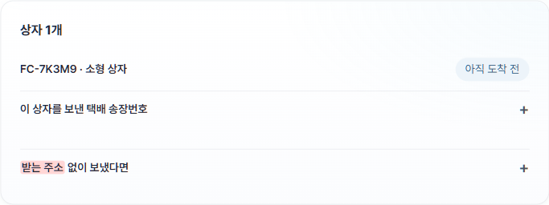
바꾼 뒤
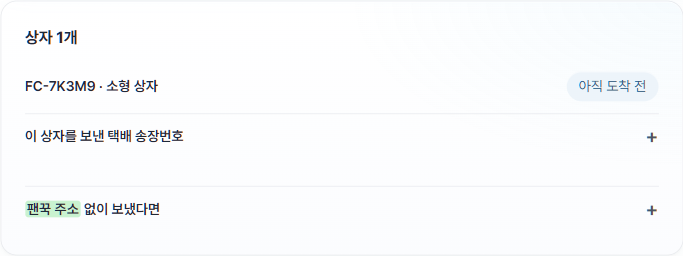
/gifts/FC-P4X7N · 1지금
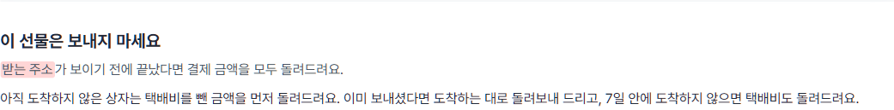
바꾼 뒤
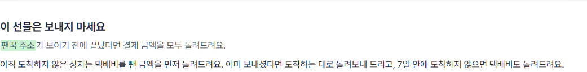
/me · 1지금
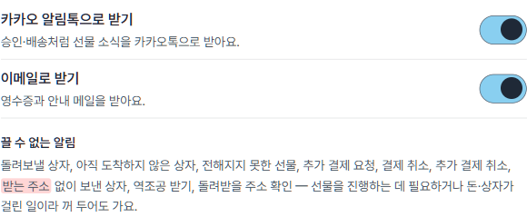
바꾼 뒤
/guide/fan · 1지금
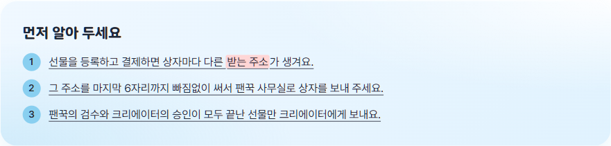
바꾼 뒤
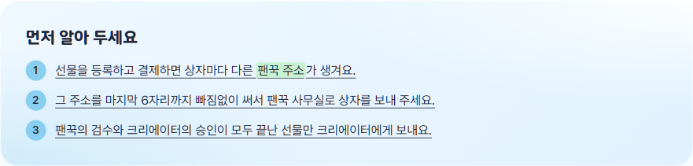
/guide/fan · 2지금
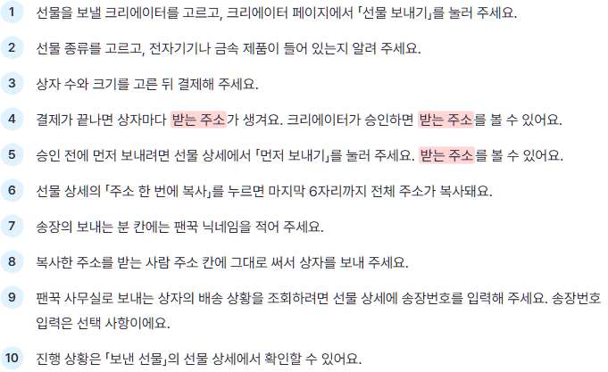
바꾼 뒤
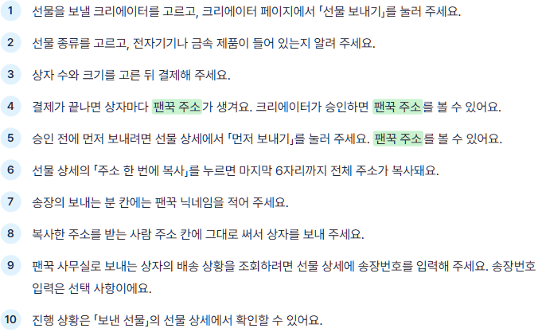
/guide/fan · 3지금
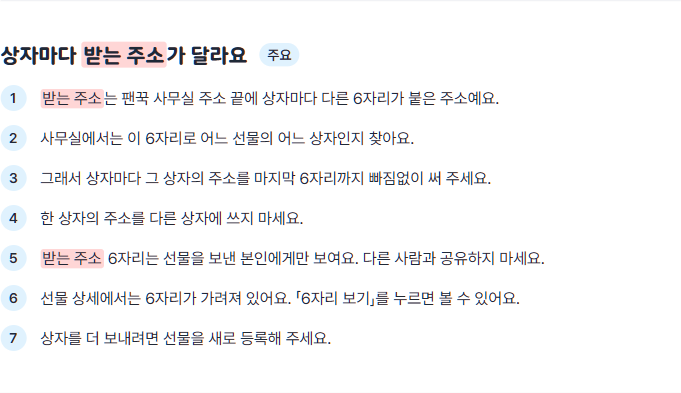
바꾼 뒤
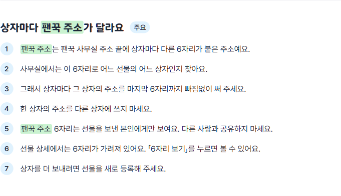
/guide/fan · 4지금
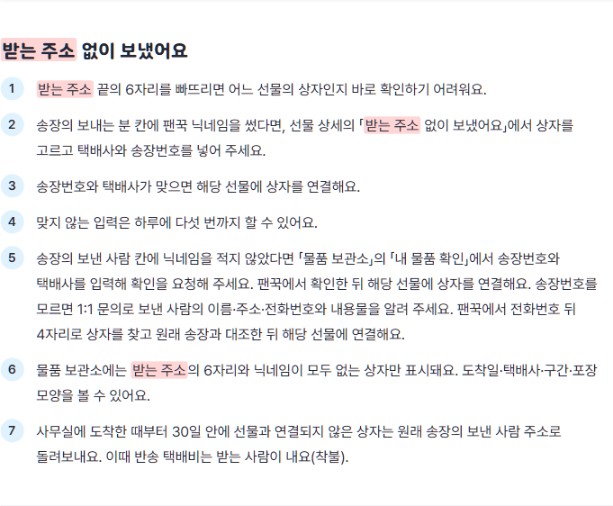
바꾼 뒤
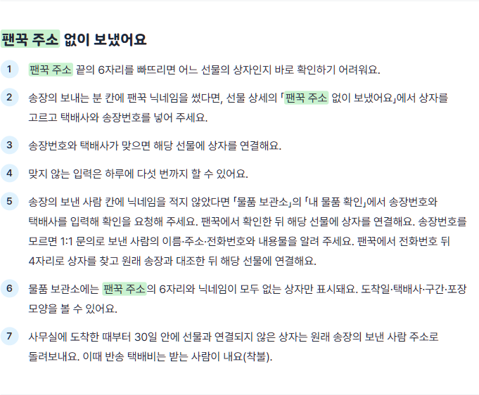
/faq · 1지금
바꾼 뒤
/faq · 2지금
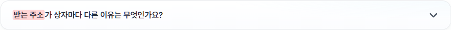
바꾼 뒤
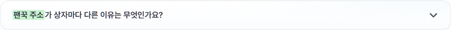
/faq · 3지금
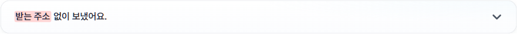
바꾼 뒤
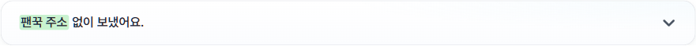
/support · 1지금
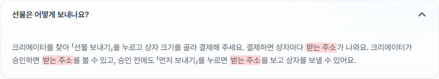
바꾼 뒤
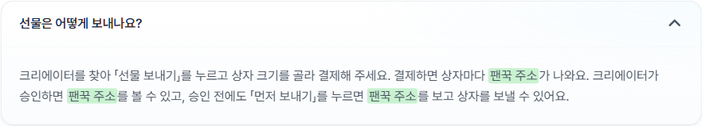
소스의 「받는 주소」 문장 전체
「…」는 주문번호·숫자처럼 코드 값이 들어가는 자리예요. 크리에이터 설정의 「받는 주소」는 크리에이터 자신의 집 주소라는 뜻이라 바꾸지 않는 쪽으로 나눴어요.
| 팬 화면 — 바꿈 | ||
|---|---|---|
widgets/gift-status/ui/gift-status-page.tsx | 결제가 끝났어요. 아래 받는 주소로 상자를 보내 주세요. | 결제가 끝났어요. 아래 팬꾹 주소로 상자를 보내 주세요. |
widgets/gift-status/ui/gift-status-page.tsx | 받는 주소가 보이기 전에 끝났다면 결제 금액을 모두 돌려드려요. | 팬꾹 주소가 보이기 전에 끝났다면 결제 금액을 모두 돌려드려요. |
widgets/gift-status/ui/gift-status-page.tsx | 상자마다 받는 주소가 달라요. 상자에 맞는 주소를 끝 6자리까지 그대로 써서 보내 주세요. 승인은 출고 전까지만 나면 돼요. | 상자마다 팬꾹 주소가 달라요. 상자에 맞는 주소를 끝 6자리까지 그대로 써서 보내 주세요. 승인은 출고 전까지만 나면 돼요. |
widgets/gift-status/ui/gift-status-page.tsx | 받는 주소 없이 보냈다면 | 팬꾹 주소 없이 보냈다면 |
widgets/gift-status/ui/gift-status-page.tsx | 받는 주소 끝 6자리를 빼고 보낸 상자는 사무실에서 바로 찾지 못해요. 송장번호와 택배사가 맞으면 찾아요. | 팬꾹 주소 끝 6자리를 빼고 보낸 상자는 사무실에서 바로 찾지 못해요. 송장번호와 택배사가 맞으면 찾아요. |
widgets/gift-status/ui/gift-status-page.tsx | 상자를 더 보내려면 새로 등록해 주세요. 상자마다 받는 주소가 달라요. | 상자를 더 보내려면 새로 등록해 주세요. 상자마다 팬꾹 주소가 달라요. |
features/box-waybill/ui/receiving-address.tsx | … 받는 주소 끝 6자리 … | … 팬꾹 주소 끝 6자리 … |
features/box-waybill/ui/early-send-gate.tsx | 거절돼 반송되면 반송 택배비를 뺀 금액을 돌려드려요. 승인을 기다렸다가 보내셔도 돼요 — 승인되면 받는 주소가 바로 보여요. | 거절돼 반송되면 반송 택배비를 뺀 금액을 돌려드려요. 승인을 기다렸다가 보내셔도 돼요 — 승인되면 팬꾹 주소가 바로 보여요. |
features/box-waybill/ui/find-my-box.tsx | 받는 주소 없이 보낸 상자 찾기 | 팬꾹 주소 없이 보낸 상자 찾기 |
features/box-waybill/ui/find-my-box.tsx | 받는 주소를 쓰지 않고 상자를 보냈다면 | 팬꾹 주소를 쓰지 않고 상자를 보냈다면 |
features/gift-cancel/ui/cancel-gift-button.tsx | 아직 받는 주소가 보이기 전이라 결제 금액을 모두 돌려드려요. | 아직 팬꾹 주소가 보이기 전이라 결제 금액을 모두 돌려드려요. |
entities/notification/model/delivery-policy.ts | 받는 주소 없이 보낸 상자 | 팬꾹 주소 없이 보낸 상자 |
features/notification-dispatch/lib/notification-body.ts | [팬꾹] 받는 주소 없이 보낸 상자가 있어요 | [팬꾹] 팬꾹 주소 없이 보낸 상자가 있어요 |
features/notification-dispatch/lib/notification-body.ts | 받는 주소 없이 보낸 상자가 있어요. | 팬꾹 주소 없이 보낸 상자가 있어요. |
features/notification-dispatch/lib/notification-body.ts | 받는 주소 없이 보냈어요 | 팬꾹 주소 없이 보냈어요 |
widgets/support/ui/support-page.tsx | 크리에이터를 찾아 「선물 보내기」를 누르고 상자 크기를 골라 결제해 주세요. 결제하면 상자마다 받는 주소가 나와요. 크리에이터가 승인하면 받는 주소를 볼 수 있고, 승인 전에도 「먼저 보내기」를 누르면 받는 주소를 보고 상자를 보낼 수 있어요. | 크리에이터를 찾아 「선물 보내기」를 누르고 상자 크기를 골라 결제해 주세요. 결제하면 상자마다 팬꾹 주소가 나와요. 크리에이터가 승인하면 팬꾹 주소를 볼 수 있고, 승인 전에도 「먼저 보내기」를 누르면 팬꾹 주소를 보고 상자를 보낼 수 있어요. |
widgets/support/ui/support-page.tsx | 크리에이터가 받지 않은 선물과 결제하고 …일 안에 승인되지 않은 선물은 크리에이터에게 배송되지 않고, 받지 않은 이유는 팬에게 알리지 않아요. 사무실에 도착하기 전이고 받는 주소를 본 적이 없으면 결제 금액을 모두 돌려드려요. 받는 주소를 본 적이 있으면 택배비를 뺀 금액을 먼저 돌려드리고, 그 뒤에 도착한 상자는 돌려보내 드려요. 결제하고 30일 안에 상자가 오지 않으면 택배비도 돌려드려요. 사무실에 도착한 상자는 확인해 주신 돌려받을 주소로 돌려보내 드리고, 택배비를 뺀 금액을 돌려드려요(검수 기준에 맞지 않는 상자는 돌려드리는 금액이 없어요). | 크리에이터가 받지 않은 선물과 결제하고 …일 안에 승인되지 않은 선물은 크리에이터에게 배송되지 않고, 받지 않은 이유는 팬에게 알리지 않아요. 사무실에 도착하기 전이고 팬꾹 주소를 본 적이 없으면 결제 금액을 모두 돌려드려요. 팬꾹 주소를 본 적이 있으면 택배비를 뺀 금액을 먼저 돌려드리고, 그 뒤에 도착한 상자는 돌려보내 드려요. 결제하고 30일 안에 상자가 오지 않으면 택배비도 돌려드려요. 사무실에 도착한 상자는 확인해 주신 돌려받을 주소로 돌려보내 드리고, 택배비를 뺀 금액을 돌려드려요(검수 기준에 맞지 않는 상자는 돌려드리는 금액이 없어요). |
widgets/legal/model/guide-fan-doc.ts | 선물을 등록하고 결제하면 상자마다 다른 받는 주소가 생겨요. | 선물을 등록하고 결제하면 상자마다 다른 팬꾹 주소가 생겨요. |
widgets/legal/model/guide-fan-doc.ts | 결제가 끝나면 상자마다 받는 주소가 생겨요. 크리에이터가 승인하면 받는 주소를 볼 수 있어요. | 결제가 끝나면 상자마다 팬꾹 주소가 생겨요. 크리에이터가 승인하면 팬꾹 주소를 볼 수 있어요. |
widgets/legal/model/guide-fan-doc.ts | 승인 전에 먼저 보내려면 선물 상세에서 「먼저 보내기」를 눌러 주세요. 받는 주소를 볼 수 있어요. | 승인 전에 먼저 보내려면 선물 상세에서 「먼저 보내기」를 눌러 주세요. 팬꾹 주소를 볼 수 있어요. |
widgets/legal/model/guide-fan-doc.ts | 상자마다 받는 주소가 달라요 | 상자마다 팬꾹 주소가 달라요 |
widgets/legal/model/guide-fan-doc.ts | 받는 주소는 팬꾹 사무실 주소 끝에 상자마다 다른 6자리가 붙은 주소예요. | 팬꾹 주소는 팬꾹 사무실 주소 끝에 상자마다 다른 6자리가 붙은 주소예요. |
widgets/legal/model/guide-fan-doc.ts | 받는 주소 6자리는 선물을 보낸 본인에게만 보여요. 다른 사람과 공유하지 마세요. | 팬꾹 주소 6자리는 선물을 보낸 본인에게만 보여요. 다른 사람과 공유하지 마세요. |
widgets/legal/model/guide-fan-doc.ts | 받는 주소 없이 보냈어요 | 팬꾹 주소 없이 보냈어요 |
widgets/legal/model/guide-fan-doc.ts | 받는 주소 끝의 6자리를 빠뜨리면 어느 선물의 상자인지 바로 확인하기 어려워요. | 팬꾹 주소 끝의 6자리를 빠뜨리면 어느 선물의 상자인지 바로 확인하기 어려워요. |
widgets/legal/model/guide-fan-doc.ts | 송장의 보내는 분 칸에 팬꾹 닉네임을 썼다면, 선물 상세의 「받는 주소 없이 보냈어요」에서 상자를 고르고 택배사와 송장번호를 넣어 주세요. | 송장의 보내는 분 칸에 팬꾹 닉네임을 썼다면, 선물 상세의 「팬꾹 주소 없이 보냈어요」에서 상자를 고르고 택배사와 송장번호를 넣어 주세요. |
widgets/legal/model/guide-fan-doc.ts | 물품 보관소에는 받는 주소의 6자리와 닉네임이 모두 없는 상자만 표시돼요. 도착일·택배사·구간·포장 모양을 볼 수 있어요. | 물품 보관소에는 팬꾹 주소의 6자리와 닉네임이 모두 없는 상자만 표시돼요. 도착일·택배사·구간·포장 모양을 볼 수 있어요. |
widgets/legal/model/faq-doc.ts | 볼 수 없어요. 해당 송장번호로 택배사 배송 조회를 하면 받는 주소의 일부가 보일 수 있기 때문이에요. … 팬이 선물 상세에 입력하는 송장번호는 팬꾹 사무실로 보내는 상자의 송장번호예요. | 볼 수 없어요. 해당 송장번호로 택배사 배송 조회를 하면 팬꾹 주소의 일부가 보일 수 있기 때문이에요. … 팬이 선물 상세에 입력하는 송장번호는 팬꾹 사무실로 보내는 상자의 송장번호예요. |
widgets/legal/model/faq-doc.ts | 받는 주소가 상자마다 다른 이유는 무엇인가요? | 팬꾹 주소가 상자마다 다른 이유는 무엇인가요? |
widgets/legal/model/faq-doc.ts | 받는 주소 없이 보냈어요. | 팬꾹 주소 없이 보냈어요. |
widgets/legal/model/faq-doc.ts | 송장의 보내는 분 칸에 팬꾹 닉네임을 적었다면 선물 상세의 「받는 주소 없이 보냈어요」에서 택배사와 송장번호를 입력해 주세요. 닉네임을 적지 않았다면 「물품 보관소」의 「내 물품 확인」에서 송장번호와 택배사를 입력해 확인을 요청해 주세요. 팬꾹에서 확인한 뒤 해당 선물에 상자를 연결해요. 송장번호를 모르면 1:1 문의로 보낸 사람의 이름·주소·전화번호와 내용물을 알려 주세요. 팬꾹에서 전화번호 뒤 4자리로 상자를 찾고 원래 송장과 대조한 뒤 해당 선물에 연결해요. 사무실에 도착한 때부터 30일 안에 선물과 연결되지 않은 상자는 원래 송장의 보낸 사람 주소로 착불로 돌려보내요. | 송장의 보내는 분 칸에 팬꾹 닉네임을 적었다면 선물 상세의 「팬꾹 주소 없이 보냈어요」에서 택배사와 송장번호를 입력해 주세요. 닉네임을 적지 않았다면 「물품 보관소」의 「내 물품 확인」에서 송장번호와 택배사를 입력해 확인을 요청해 주세요. 팬꾹에서 확인한 뒤 해당 선물에 상자를 연결해요. 송장번호를 모르면 1:1 문의로 보낸 사람의 이름·주소·전화번호와 내용물을 알려 주세요. 팬꾹에서 전화번호 뒤 4자리로 상자를 찾고 원래 송장과 대조한 뒤 해당 선물에 연결해요. 사무실에 도착한 때부터 30일 안에 선물과 연결되지 않은 상자는 원래 송장의 보낸 사람 주소로 착불로 돌려보내요. |
| 역조공 보내기(크리에이터 화면, 같은 뜻) — 함께 바꿀지 정해 주세요 | ||
features/revgift-send/ui/send-form.tsx | 결제하면 팬마다 받는 주소가 안내돼요 | 결제하면 팬마다 팬꾹 주소가 안내돼요 |
features/revgift-send/ui/send-form.tsx | 팬마다 상자를 따로 포장해서, 그 팬의 받는 주소를 끝까지 그대로 써서 보내 주세요. | 팬마다 상자를 따로 포장해서, 그 팬의 팬꾹 주소를 끝까지 그대로 써서 보내 주세요. |
widgets/revgift-sent/ui/revgift-sent-page.tsx | 상자를 더 보내려면 새로 보내기를 해 주세요. 상자마다 받는 주소가 달라요. | 상자를 더 보내려면 새로 보내기를 해 주세요. 상자마다 팬꾹 주소가 달라요. |
| 그대로 — 크리에이터 자신의 주소라는 뜻 | ||
widgets/creator-settings/ui/creator-settings-page.tsx | 받는 주소 | 그대로 |
widgets/creator-settings/ui/creator-settings-page.tsx | 받는 주소·받기 설정·차단한 팬 | 그대로 |
widgets/creator-action-center/ui/approval-window-with-address.tsx | 승인한 선물은 이 주소로 보내요. 받는 주소가 있어야 승인할 수 있어요. | 그대로 |
features/approval-request/model/approve-gift.ts | 받는 주소를 먼저 등록해 주세요. | 그대로 |
entities/creator/model/channel-url.ts | 채널 주소를 확인해 주세요. 받는 주소 꼴은 아래에 있어요. | 그대로 |
| 그대로 — 운영자 화면(입고 작업) | ||
entities/parcel/model/office-labels.ts | 받는 주소 6자리 없음 | 그대로 |
features/office-inbound/model/scan-inbound.ts | 받는 주소 끝 6자리에 쓰지 않는 글자가 있어요. 상자에 적힌 주소를 다시 보고 입력해 주세요. | 그대로 |
features/office-inbound/model/scan-inbound.ts | 받는 주소 끝 6자리가 맞지 않아요. 한 글자씩 다시 확인해 입력해 주세요. | 그대로 |
features/office-inbound/ui/inbound-workbench.tsx | 받는 주소 끝 6자리를 입력하세요 | 그대로 |
features/office-inbound/ui/inbound-workbench.tsx | 상자에 붙은 택배 송장 바코드를 스캐너로 읽은 뒤, 받는 주소 끝 6자리를 입력해요. 라벨을 붙였으면 라벨 QR 을 읽혀요. 주문번호나 상태를 손으로 고르는 칸은 없어요. | 그대로 |
features/office-inbound/ui/inbound-workbench.tsx | 받는 주소 6자리 입력 | 그대로 |
features/office-inbound/ui/inbound-workbench.tsx | 받는 주소 끝 6자리 입력 | 그대로 |
features/office-inbound/ui/inbound-workbench.tsx | 원래 송장의 받는 주소 맨 끝 6자리 | 그대로 |
widgets/admin-unmatched/ui/unmatched-panel.tsx | 받는 주소 6자리로 입고되지 않아 보류된 상자와, 분쟁·「제가 보낸 게 아니에요」로 출고를 멈춘 상자예요. 출고 목록에는 나오지 않아요. | 그대로 |